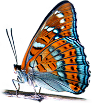
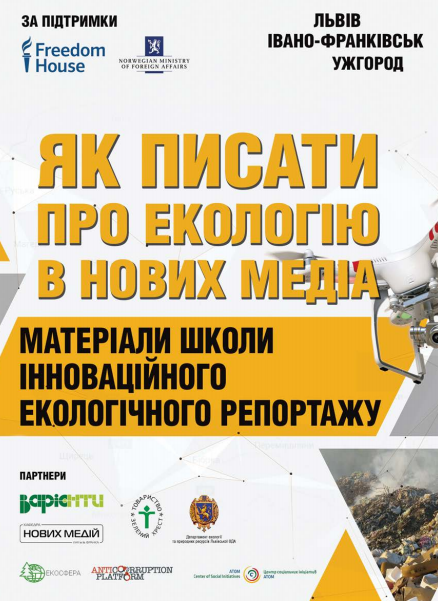

<!doctype htm1>
<htm1>
    <head>
        <meta charset="UTF-8">
    	<title>Природа України</title>
	</head>
	<body bgcolor="lightgreen">
	    <h1 style="color: green"> Портал «Природа України»</h1>
		
		
<p align="justify">

<a href="https://nature.land.kiev.ua/"> Портал «Природа України»</a> cтворений з метою зібрати в одному місці та довести до широкого кола громадськості інформацію
 щодо природних об’єктів та флори і фауни України. Зокрема і про рідкісні і ті що потребують
 допомоги види тварин, рослин і рослинних угруповань.</p>
        <h2 style="color: green">Посібник “Як писати про екологію в нових медіа”</h2>
		
		
<p align="justify">
<a href="https://pryroda.in.ua/"> Посібник “Як писати про екологію в нових медіа”</a> Політичні та економічні зміни, що сьогодні відбуваються в Україні, призвели до збільшення на
 місцях соціальних конфліктів, які базуються на екологічній проблематиці (вирубка лісів,
 крадіжки гравію з річок, проблеми утилізації сміття, нелегальний видобуток бурштину тощо). 
 Частину таких проблем, як показує досвід, можна вирішити силами громад, з використанням медіа.</p>
	</body
	
	
	
	
	
	

	
	